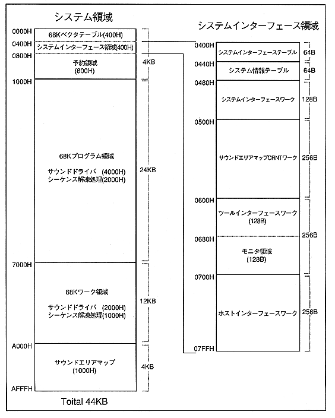

Return to previous page ｜ Return to menu ｜ Go to next page
Chapter 5 System Area
5.1 Interface area details
The system area is a fixed area for operating the sound driver provided by SEGA, and consists of five areas as shown in the table below. Above all, the system interface area is an important area for controlling all systems. The following section describes the details in the system interface area.

Return to previous page ｜ Return to menu ｜ Go to next page